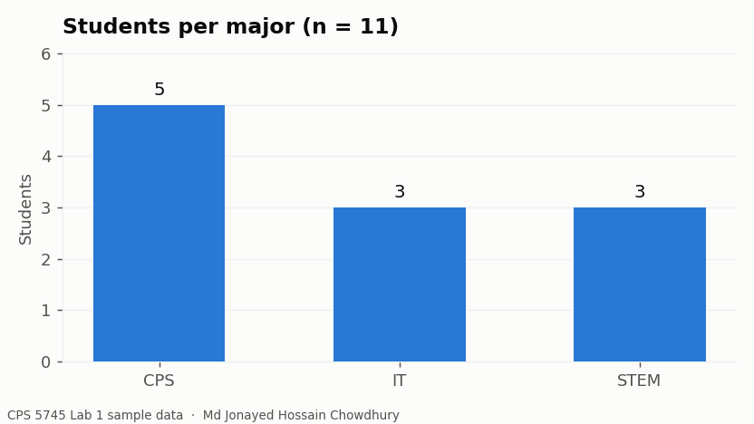

CPS 5745 Interactive Information Visualization · Kean University · Fall 2026
This page lives in my public_html folder on obi2 and was created
during the Welcome to Linux activity. It was made with vi over SSH,
then given file permissions 755 so the web server can read it.

The Lab 1 sample dataset, counted by major. Eleven students, including my own row.
What else is on this server
sum.php — a PHP form that calls a Python script to add two numbers.
loan.php — a loan payment calculator. PHP takes the inputs,
Python returns the full amortisation schedule, and the page charts it.